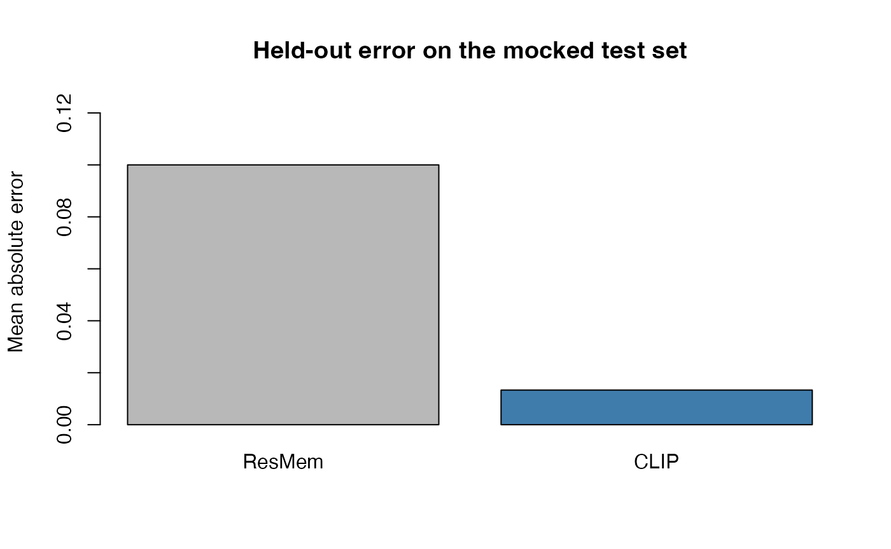

Why use the benchmarking layer?
If you want more than a single memorability score,
memscore gives you two comparison workflows from R. You can
benchmark a custom train/val/test manifest with
memscore_benchmark_manifest(), or you can run a repeated
FIGRIM study with memscore_study_figrim().
This vignette uses a mocked backend so the examples stay runnable
under R CMD check. The return values, file outputs, and
summary structures match the real package interface whether you run
through reticulate or the CLI bridge.
What does a custom benchmark look like?
The shortest useful path is to point
memscore_benchmark_manifest() at a CSV with image paths,
targets, and split labels.
benchmark <- memscore_benchmark_manifest(
manifest = manifest_path,
root = tempdir(),
clip_models = c("ViT-B-32", "RN50"),
regressors = "ridge"
)
benchmark$summary$delta_vs_resmem
#> $spearman
#> [1] 0.19
#>
#> $mse
#> [1] -0.011
stopifnot(benchmark$summary$delta_vs_resmem$spearman > 0)
stopifnot(benchmark$summary$delta_vs_resmem$mse < 0)That quick check answers the main question: did the best CLIP
challenger beat the released ResMem baseline on the
held-out test set?
What does the manifest need to contain?
The manifest is just a small table with path,
score, and split, plus an optional
id. Here is the example used above.
manifest_df
#> path score split id
#> 1 images/beach.jpg 0.72 train beach
#> 2 images/museum.jpg 0.68 train museum
#> 3 images/street.jpg 0.63 train street
#> 4 images/forest.jpg 0.49 train forest
#> 5 images/station.jpg 0.61 val station
#> 6 images/cafe.jpg 0.58 test cafe
#> 7 images/desert.jpg 0.47 test desert
#> 8 images/kitchen.jpg 0.52 test kitchen
stopifnot(all(c("path", "score", "split", "id") %in% names(manifest_df)))
stopifnot(all(manifest_df$score >= 0 & manifest_df$score <= 1))
stopifnot(all(sort(unique(manifest_df$split)) == c("test", "train", "val")))How do you inspect per-image outputs?
The benchmark call writes a test-set prediction table that is useful for error analysis and plotting.
predictions <- read.csv(benchmark$output_predictions, stringsAsFactors = FALSE)
predictions
#> id image_path ground_truth resmem_prediction clip_prediction
#> 1 beach /tmp/beach.jpg 0.72 0.58 0.71
#> 2 street /tmp/street.jpg 0.63 0.55 0.65
#> 3 forest /tmp/forest.jpg 0.49 0.57 0.50
stopifnot(file.exists(benchmark$output_predictions))
stopifnot(all(is.finite(predictions$clip_prediction)))
stopifnot(nrow(predictions) == 3)
predictions$resmem_abs_error <- abs(predictions$ground_truth - predictions$resmem_prediction)
predictions$clip_abs_error <- abs(predictions$ground_truth - predictions$clip_prediction)
predictions[, c("id", "resmem_abs_error", "clip_abs_error")]
#> id resmem_abs_error clip_abs_error
#> 1 beach 0.14 0.01
#> 2 street 0.08 0.02
#> 3 forest 0.08 0.01
stopifnot(mean(predictions$clip_abs_error) < mean(predictions$resmem_abs_error))
The challenger has lower average error in this example, which matches
the summary metrics returned by
benchmark$summary$delta_vs_resmem.
How do you summarize a FIGRIM study?
Once you want something closer to the repeated-study results used in
this repo, memscore_study_figrim() returns a summary table
across protocols and model configurations.
study <- memscore_study_figrim(
figrim_root = tempdir(),
clip_models = c("ViT-B-32", "RN50", "ViT-B-16"),
clip_tta = "fivecrop"
)
study_rows <- study$study$summary_rows
study_rows
#> protocol feature_source method model_mean_spearman
#> 1 across_category ViT-B-32+RN50+ViT-B-16 mean_ensemble 0.74
#> 2 within_category ViT-B-32+RN50+ViT-B-16 mean_ensemble 0.64
#> resmem_mean_spearman mean_delta_spearman
#> 1 0.45 0.29
#> 2 0.24 0.40
stopifnot(all(is.finite(study_rows$model_mean_spearman)))
stopifnot(all(study_rows$mean_delta_spearman > 0))In a real study, that summary table is the object you would write to disk, filter, and turn into a paper table or figure.
What should you reach for next?
- Use
memscore_benchmark_manifest()when you already have your own split file. - Use
memscore_benchmark_lamem()when you want the official LaMem split workflow. - Use
memscore_study_figrim()when you want repeated FIGRIM comparisons and summary tables rather than a single held-out test split.